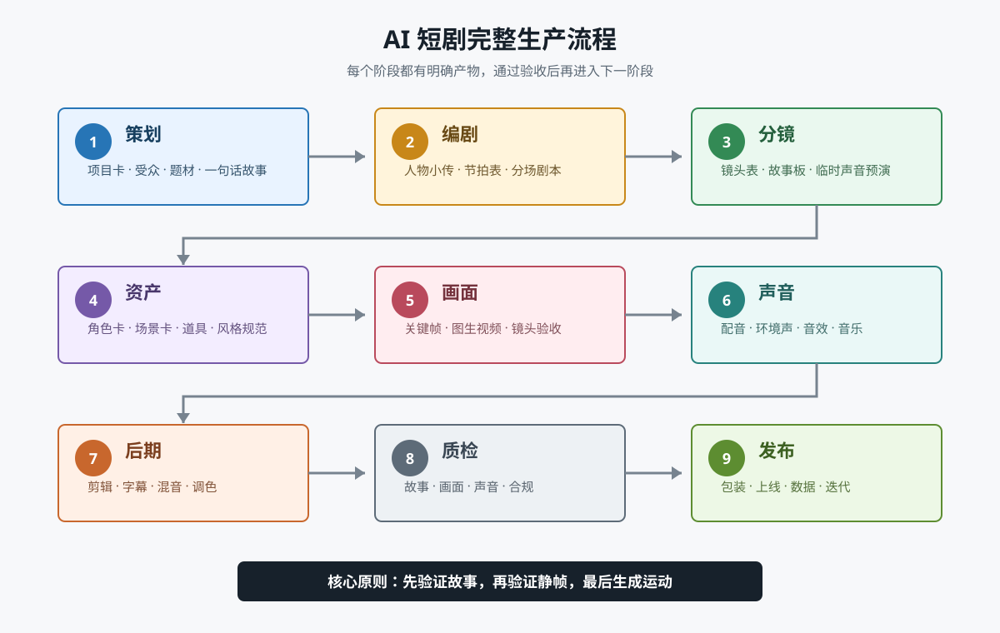
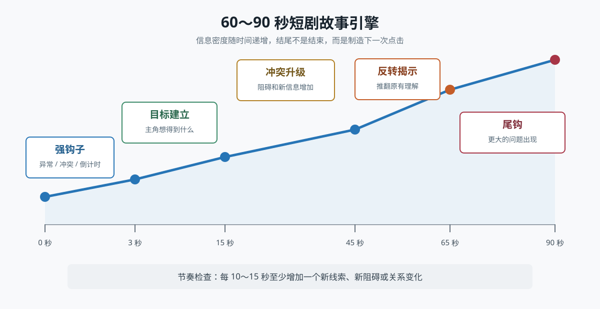
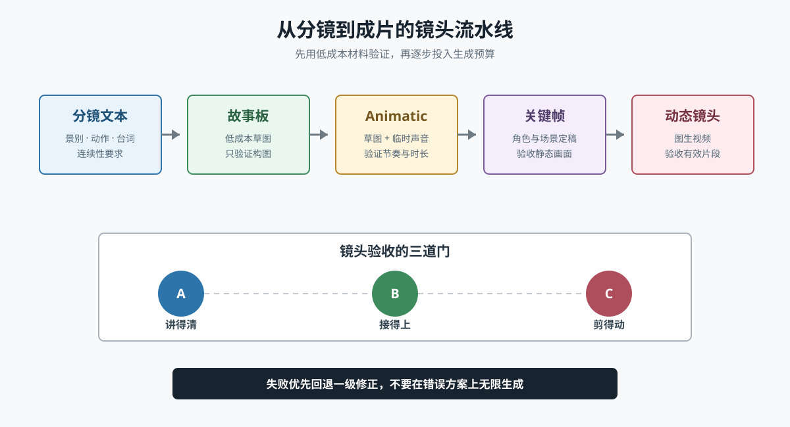
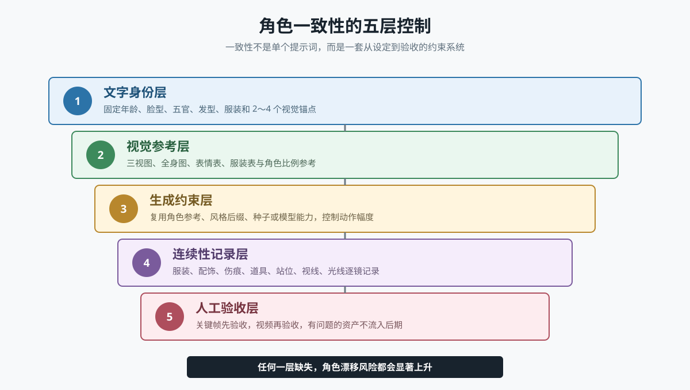
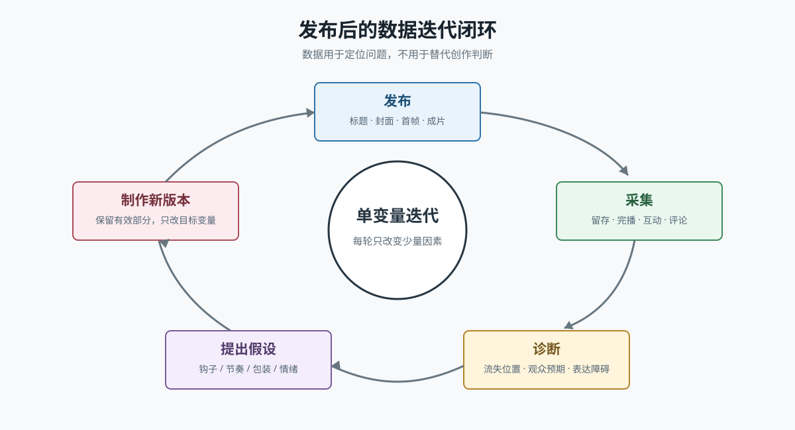
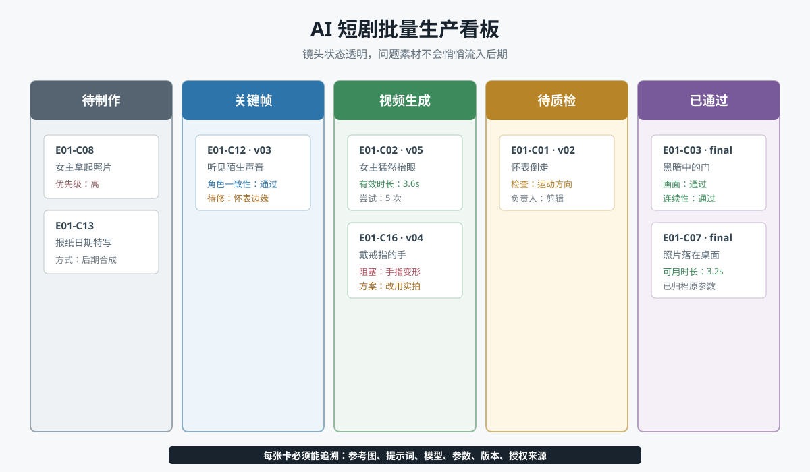

AI 短剧创作保姆级教程：从一个想法到成片发布
本教程面向第一次制作 AI 短剧的创作者，也适合作为小团队的标准作业流程（SOP）。你将从零完成一部 60～90 秒、9:16 竖屏、角色与场景相对一致、可公开发布 的 AI 短剧样片。
AI 工具的产品名称、套餐和界面经常变化，本文重点讲解可迁移的方法。实际制作时，可在同类工具中自由替换。
一、先理解：AI 短剧到底是怎样做出来的
AI 短剧并不是输入一句提示词，然后等待 AI 自动生成完整成片。稳定的生产方式是把影视制作拆成多个可控的小环节：

一部短剧的核心生产链路如下：
选题定位
↓
故事梗概与人物小传
↓
分场剧本与台词
↓
分镜表和镜头提示词
↓
角色、场景、道具定妆
↓
首帧图/关键帧生成
↓
图生视频或文生视频
↓
配音、音乐、音效
↓
剪辑、字幕、调色
↓
质检、发布、数据复盘
这里最重要的观念是：
不要把整部短剧交给一次生成，而要把每个镜头变成一个可单独修改、替换和验收的最小生产单元。
1. AI 短剧常见的三种生产路线
| 路线 | 做法 | 优点 | 缺点 | 适合场景 |
|---|---|---|---|---|
| 文生视频 | 直接用文字生成视频 | 快、探索性强 | 人物和场景一致性较弱 | 概念片、空镜、转场 |
| 图生视频 | 先生成定稿图，再让图片运动 | 可控、一致性较好 | 工序较多 | 剧情短剧的主力路线 |
| 真人/实拍 + AI | 真人拍摄后换景、换脸、扩图或特效 | 表演自然、动作稳定 | 需要拍摄条件和合规授权 | 商业项目、数字人短剧 |
新手建议以 图生视频为主、文生视频为辅：
- 角色对白、人物特写：优先图生视频；
- 城市航拍、环境空镜、梦境：可使用文生视频；
- 复杂打斗、多人互动：尽量拆镜，或考虑实拍结合 AI；
- 口型要求高的长台词：先生成稳定画面，再做口型驱动。
二、开工前准备：工具、目录与规格
1. 最小工具组合
你不需要同时购买所有工具。每个环节选择一种即可。
| 环节 | 工具类别 | 常见选择举例 | 主要用途 |
|---|---|---|---|
| 策划与编剧 | 大语言模型 | 豆包、DeepSeek、通义、ChatGPT、Claude | 选题、剧本、分镜、提示词 |
| 图片生成 | 文生图/图生图 | 即梦、Midjourney、Stable Diffusion、Flux | 角色定妆、场景、关键帧 |
| 视频生成 | 文生视频/图生视频 | 可灵、即梦、海螺、Runway、Veo 等 | 镜头动态化 |
| 配音 | TTS/声音克隆 | 剪映、微软 TTS、ElevenLabs 等 | 角色对白、旁白 |
| 音乐音效 | 音乐生成/素材库 | Suno、Udio、剪映素材库等 | 配乐、环境声、转场音效 |
| 剪辑合成 | 非线性剪辑 | 剪映专业版、Premiere Pro、DaVinci Resolve | 剪辑、字幕、混音、调色 |
| 项目管理 | 表格/看板 | Excel、飞书多维表格、Notion | 镜头状态、成本、版本管理 |
商业发布前，应逐项确认工具套餐是否允许商用，声音、字体、音乐、图片和模型是否拥有合法授权。
2. 本教程的成片规格
先固定规格，可以避免生成到一半才发现素材无法统一。
| 项目 | 建议值 |
|---|---|
| 画面比例 | 9:16 竖屏 |
| 成片分辨率 | 1080 × 1920 |
| 帧率 | 25 fps 或 30 fps，全片统一 |
| 时长 | 60～90 秒 |
| 单镜头时长 | 通常 2～5 秒 |
| 镜头数量 | 15～25 个 |
| 角色数量 | 新手控制在 1～3 人 |
| 场景数量 | 新手控制在 1～3 个 |
| 字幕安全区 | 避开顶部标题区和底部平台按钮区 |
| 导出格式 | MP4，H.264，AAC |
3. 建立项目目录
正式生成素材前，先建立固定目录：
短剧项目名/
├── 00_策划/
│ ├── 项目卡.md
│ ├── 故事梗概.md
│ └── 参考作品/
├── 01_剧本/
│ ├── 分场剧本_v01.md
│ └── 台词表_v01.xlsx
├── 02_分镜/
│ ├── 分镜表_v01.xlsx
│ └── 故事板/
├── 03_设定/
│ ├── 角色/
│ ├── 场景/
│ └── 道具/
├── 04_图片素材/
│ ├── 原始生成/
│ └── 定稿关键帧/
├── 05_视频素材/
│ ├── 原始生成/
│ └── 通过镜头/
├── 06_声音素材/
│ ├── 配音/
│ ├── 音乐/
│ └── 音效/
├── 07_剪辑工程/
├── 08_成片/
└── 09_发布与数据/
素材命名统一使用：
集数_场次_镜号_内容_版本.扩展名
示例：
E01_S02_C05_女主发现短信_v03.mp4
E01_S02_C05_女主发现短信_keyframe_v02.png
E01_林夏_对白_007_v01.wav
不要使用“最终版”“最终版2”“真的最终版”作为文件名。版本号必须递增，定稿状态由分镜表记录。
三、第一步：确定选题与受众
1. 用一句话定义项目
开工前填写一张项目卡：
项目名：
类型：悬疑 / 甜宠 / 逆袭 / 科幻 / 治愈 / 喜剧
目标观众：
发布平台：
单集时长：
计划集数：
核心情绪：
一句话故事：
差异化卖点：
本集结尾钩子：
一个合格的一句话故事通常包含：
主角 + 目标 + 阻碍 + 独特设定
示例：
能听见物品临终记忆的旧物修复师，必须在午夜前修好一块怀表，找出失踪父亲留下的真相。
这句话比“一个女孩寻找父亲的故事”更适合短剧，因为它同时给出了人物职业、超自然能力、时限和悬念。
2. 选择适合 AI 的题材
AI 擅长的内容：
- 单人或双人对话；
- 强氛围、强美术风格；
- 梦境、古风、科幻、奇幻；
- 以表情和构图推动的悬疑故事；
- 可拆成大量短镜头的叙事；
- 旁白主导、画面辅助的故事。
AI 暂时较难稳定完成的内容：
- 多人同时进行复杂肢体互动；
- 长时间一镜到底；
- 激烈打斗、精确舞蹈和复杂手部操作；
- 角色边走边说且口型必须完全同步；
- 大量具有连续空间关系的追逐场面；
- 每集频繁增加新角色和新场景。
不是不能制作，而是生成成本和返工率会明显上升。
3. 检查选题是否值得做
给每项打 1～5 分，低于 18 分时应重新打磨。
| 维度 | 检查问题 |
|---|---|
| 钩子强度 | 前 3 秒能否提出冲突、异常或利益点？ |
| 情绪价值 | 观众看完会爽、甜、怕、哭还是好奇？ |
| 视觉潜力 | 是否有容易被记住的角色、场景或道具？ |
| 制作可行性 | 能否控制在 3 名角色、3 个场景内？ |
| 连载空间 | 主线能否不断制造新问题？ |
四、第二步：搭建故事引擎
短剧的时间非常有限，不能照搬电影的慢节奏。60～90 秒单集可以使用以下结构：

| 时间 | 功能 | 观众应该获得什么 |
|---|---|---|
| 0～3 秒 | 强钩子 | “发生了什么？我必须继续看。” |
| 3～15 秒 | 建立人物与目标 | 主角是谁，现在要做什么 |
| 15～45 秒 | 冲突升级 | 计划受阻，信息持续增加 |
| 45～65 秒 | 反转或揭示 | 之前的理解被推翻 |
| 65～90 秒 | 结果与尾钩 | 得到阶段结果，同时产生更大问题 |
1. 钩子的常用写法
异常钩子
凌晨两点，已经去世三年的母亲给我打来了电话。
倒计时钩子
再过十分钟，这座城市里所有人都会忘记我的名字。
身份反差钩子
全公司都以为她是清洁工，直到董事会全体起立叫她董事长。
危险预告钩子
如果镜子里的我先眨眼，我就活不过今晚。
结果前置钩子
我结婚当天，亲手把新郎送进了监狱。
2. 每场戏只完成一个核心任务
场景不是越多越好。每一场必须至少完成一种任务：
- 推进目标；
- 增加阻碍；
- 揭示人物；
- 提供线索；
- 改变关系；
- 触发反转。
无法归入任何一项的场景，通常应该删除。
3. 用“但是 / 所以”检查因果
把剧情节点连接起来：
女主收到父亲留下的怀表，
但是怀表已经损坏，
所以她连夜修复，
但是修复时听见怀表说“不要相信陈叔”，
所以她去翻父亲的旧档案，
但是陈叔突然出现在门口……
如果剧情只能用“然后”连接，往往说明事件只是堆叠，缺少因果推动。
五、第三步：让 AI 协助写出可拍的剧本
1. 不要直接要求“一次写完”
推荐按以下顺序与大语言模型协作：
- 输出 10 个一句话创意；
- 筛选 1 个创意并补充世界观；
- 生成人物小传；
- 生成整季故事弧；
- 生成单集节拍表；
- 生成分场剧本；
- 压缩台词并检查可视化程度；
- 人工定稿。
2. 创意生成提示词
你是一名擅长竖屏短剧的编剧。
请为我设计 10 个【悬疑 + 轻科幻】AI 短剧创意。
制作限制：
1. 单集 60～90 秒；
2. 主要角色不超过 3 人；
3. 常驻场景不超过 3 个；
4. 避免大规模战争、复杂打斗和多人群戏；
5. 第一集前 3 秒必须出现异常事件；
6. 每个创意需要具备连续创作 20 集的潜力。
每个创意按以下格式输出：
- 剧名：
- 一句话故事：
- 核心设定：
- 主角目标：
- 持续冲突：
- 视觉记忆点：
- 第一集结尾钩子：
- AI 制作难点：
3. 人物小传提示词
请根据下面的故事设定，为主要角色编写“表演可用、视觉可用”的人物小传。
【粘贴故事设定】
每名角色必须包含：
1. 姓名、年龄、职业；
2. 外在目标与内在需求；
3. 最大恐惧与性格缺陷；
4. 与其他角色的关系；
5. 说话节奏、口头禅、不会说的话；
6. 标志性动作；
7. 可视化外貌：脸型、五官、发型、服装、配饰；
8. 角色在第一季中的变化弧线；
9. 适合 AI 生成的稳定视觉锚点。
避免使用“很漂亮”“很有气质”等不可验证的空泛描述。
4. 单集剧本提示词
你是一名短剧编剧和制片人。请写一集可由 AI 生成的竖屏短剧。
【项目资料】
类型：
人物小传：
上一集结尾：
本集目标：
本集必须揭示的信息：
本集结尾钩子：
【制作约束】
- 总时长 75 秒左右；
- 角色不超过 3 人；
- 场景不超过 2 个；
- 单句台词尽量不超过 15 个汉字；
- 开头 3 秒必须有冲突；
- 每 10～15 秒至少出现一次新信息；
- 避免复杂手部动作、多人打斗和长距离连续走位；
- 用能被镜头直接看到或听到的内容表达，不写抽象心理活动；
- 输出时标注场次、时间、地点、人物、动作、台词和预计时长。
【输出格式】
场次 1：内/外景，地点，时间
预计时长：
人物：
画面与动作：
角色名：台词
音效/音乐：
转场：
5. 从“文学剧本”改成“可拍剧本”
不可直接拍摄的描述：
林夏想起父亲多年的隐瞒，心中百感交集。
改成可视化表达：
林夏盯着照片中被剪掉的人影。她攥紧怀表，指节发白。
林夏（低声）：“你到底瞒了我什么？”
转换原则：
| 抽象表达 | 可视化替代 |
|---|---|
| 她很紧张 | 呼吸加快、反复看门、握紧衣角 |
| 他想起童年 | 插入旧照片、童年闪回、熟悉的声音 |
| 气氛很压抑 | 冷色光、狭窄构图、低频环境声 |
| 时间紧迫 | 倒计时、钟声、快速切镜 |
| 两人关系疏远 | 站位拉开、不看对方、对话留白 |
6. 台词精修的四条规则
- 删解释：画面能表达的内容不要再用台词解释。
- 删寒暄：短剧中“你好、请坐、最近好吗”通常没有价值。
- 加潜台词：角色真实意图不必全部说出来。
- 读出声：一句台词读起来拗口，配音后只会更明显。
以 75 秒短剧为例，若对白持续不断，中文台词通常应控制在约 180～240 字以内；留有停顿、反应镜头和环境声时还要进一步减少。
六、第四步：把剧本拆成分镜表
分镜表是整个制作过程中最重要的控制文件。没有分镜表，后期很容易出现漏镜头、景别重复、动作接不上和预算失控。
1. 分镜表模板
| 镜号 | 时长 | 景别/机位 | 画面内容 | 人物动作 | 台词/旁白 | 声音 | 生成方式 | 状态 |
|---|---|---|---|---|---|---|---|---|
| C01 | 3s | 大特写/俯拍 | 怀表秒针倒转 | 无 | 旁白：它又开始倒着走了 | 滴答声 | 文生视频 | 待生成 |
| C02 | 4s | 近景/平视 | 林夏猛然抬头 | 看向门口 | 林夏：谁在那里？ | 木门轻响 | 图生视频 | 待生成 |
| C03 | 3s | 特写/固定 | 门缝下滑入旧照片 | 照片停住 | 无 | 纸张摩擦 | 图生视频 | 待生成 |
建议增加以下生产字段：
集数、场次、镜号、优先级、画幅、首帧路径、尾帧路径、
图片提示词、视频提示词、负面提示词、使用模型、生成参数、
生成次数、已选版本、负责人、版权来源、备注
2. 景别怎么选
| 景别 | 适合表达 | 使用建议 |
|---|---|---|
| 大远景 | 地点、规模、孤独感 | 开场建立环境，不宜过多 |
| 全景 | 人物和环境关系 | 适合进入场景、展示站位 |
| 中景 | 动作和双人关系 | 对话常用 |
| 近景 | 情绪和反应 | 竖屏短剧的主力景别 |
| 特写 | 眼神、道具、线索 | 强调关键信息 |
| 大特写 | 极端情绪、局部细节 | 少量使用，制造冲击 |
竖屏画面较窄，推荐多使用近景和特写，但不能整集都是“大头照”。可以按“全景建立空间 → 中近景推进 → 特写强调线索”的节奏变化。
3. 每个镜头只保留一个主要动作
不稳定的镜头描述：
女主从椅子上站起来，拿起杯子走到窗边，转身哭着说话，窗外下起大雨。
应拆成：
- 女主闻声站起；
- 手部特写：碰倒水杯；
- 女主走到窗边的背影；
- 近景：她转身落泪；
- 窗外暴雨空镜。
拆镜后，每次生成只需要解决一个动作，成功率更高，也更方便剪辑控制节奏。
4. 保证镜头连续性

生成前逐镜检查：
- 上一镜人物看向画面右侧，下一镜被看对象应位于合理方向；
- 人物服装、发型、伤痕、手持道具不能突然变化；
- 门、窗、桌子等场景结构要保持大致一致；
- 同一时间段的光线方向和色温应一致；
- 上一镜抬手，下一镜不能无过渡地变成双手插袋；
- 重要动作至少准备“动作开始”和“动作结束”两个剪辑点。
七、第五步：建立角色、场景和道具设定
直接逐镜生成最大的风险，是同一个角色每个镜头都长得不一样。正确做法是先制作视觉资产，再进入镜头生产。

1. 制作角色设定卡
每个主要角色至少准备：
- 正面头像；
- 左右 45° 头像；
- 正面全身；
- 侧面全身；
- 喜、怒、哀、惊等表情；
- 常用服装；
- 标志性配饰；
- 固定色板；
- 一段不可随意改写的角色描述。
角色描述示例：
林夏，25 岁的中国女性旧物修复师，鹅蛋脸，偏窄下颌，
单眼皮，深棕色瞳孔，鼻梁左侧有一颗小痣，
黑色齐肩直发，发尾轻微内扣，
穿墨绿色工装衬衫和黑色高腰长裤，
左手戴旧银色机械表，气质克制警觉。
其中“鼻梁左侧的小痣、墨绿色工装、旧银色机械表”都是视觉锚点。锚点应具体、稳定、易识别，数量控制在 2～4 个。
2. 生成角色设定图提示词
角色设定表，三视图，同一个角色，
25 岁中国女性旧物修复师，鹅蛋脸，偏窄下颌，单眼皮，
鼻梁左侧一颗小痣，黑色齐肩直发，发尾轻微内扣，
墨绿色工装衬衫，黑色高腰长裤，左手旧银色机械表，
正面、左侧面、背面，全身站姿，中性表情，
纯浅灰背景，柔和均匀棚拍光，写实电影人物概念设计，
服装和五官高度一致，清晰细节，9:16
负面提示词可按工具支持情况填写：
多人，重复人物，五官不一致，服装变化，多余手指，
手部畸形，肢体扭曲，文字，水印，标志，过度磨皮，
夸张妆容，模糊，低清晰度
负面提示词不能代替清晰的正向描述。先明确要什么，再排除不要什么。
3. 固定美术风格
建立一段全项目复用的风格后缀：
写实电影质感，现代悬疑剧，克制的青绿色与暖黄色对比，
低饱和度，真实皮肤纹理，柔和电影光，浅景深，
细微胶片颗粒，高动态范围，竖屏构图
不要在同一集中混用“日系动漫、超写实摄影、油画、赛博朋克”等彼此冲突的风格，除非剧情明确要求。
4. 制作场景圣经
为每个常驻场景记录：
场景名称：旧物修复店
空间布局：入口朝南，工作台靠东墙，北侧有一扇窄窗
主色：墨绿、深棕、旧黄铜
主光源：北侧窄窗冷光
辅光源：工作台右侧暖色台灯
固定物件：木质工作台、黄铜放大镜、绿色台灯、旧挂钟
时间状态：夜晚
禁止变化：窗户位置、工作台方向、墙面颜色
建议生成：
- 场景全景；
- 面向东、南、西、北的视角参考；
- 白天与夜晚版本；
- 空场版本；
- 人物在场景中的比例参考。
5. 关键道具必须单独定妆
推动剧情的怀表、戒指、信件、武器、手机界面等，都应单独生成清晰参考图。尤其是含文字的道具，最好在图片编辑或后期软件中人工制作文字，再合成到画面中，不要依赖生成模型准确书写。
八、第六步：生成每个镜头的关键帧
1. 先低成本预演，再高质量生成
推荐三轮生产：
- 草图轮：低成本生成故事板，只检查构图和叙事；
- 定稿轮：使用角色、场景参考生成高质量关键帧；
- 修复轮：局部重绘手部、五官、道具和背景错误。
如果故事板阶段发现镜头不成立，修改成本很低；视频生成后才改分镜，成本最高。
2. 图片提示词公式
主体身份
+ 外貌与服装锚点
+ 当前动作和表情
+ 场景与时间
+ 景别、机位和构图
+ 光线
+ 美术风格
+ 画幅和质量要求
完整示例：
林夏，25 岁中国女性旧物修复师，黑色齐肩直发，
穿墨绿色工装衬衫，左手戴旧银色机械表，
坐在木质工作台前，突然听见异响，抬眼看向画面右侧，
神情警觉，右手停在半空，
深夜的旧物修复店，背景有模糊的黄铜挂钟和绿色台灯，
近景，平视机位，人物位于画面左侧三分之一，
右侧保留视线空间，暖色台灯侧光，窗外微弱冷光，
写实电影质感，现代悬疑剧，低饱和度，真实皮肤纹理，
浅景深，细微胶片颗粒，9:16 竖屏
3. 构图必须服务于下一步运动
如果人物下一步要向右走，画面右侧需要留空间；如果镜头准备推进到怀表，怀表必须清晰可见；如果下一镜要切到门口，人物视线方向应能引导观众看向门。
4. 关键帧验收清单
进入视频生成前逐项检查：
- ☐ 是不是正确角色，而不是“长得相似的陌生人”；
- ☐ 发型、服装、配饰是否与设定卡一致；
- ☐ 手指、牙齿、耳朵、眼睛是否明显畸形；
- ☐ 关键道具是否正确；
- ☐ 人物视线和站位是否符合分镜；
- ☐ 场景光线是否与前后镜头一致；
- ☐ 构图是否为运动预留空间；
- ☐ 画面中是否出现乱码、水印或无意义标志；
- ☐ 是否留出了字幕区域；
- ☐ 放大到 100% 后主体是否足够清晰。
九、第七步：把关键帧变成视频
1. 视频提示词只描述“变化”
图片已经定义人物、服装、场景和构图。图生视频提示词的重点应是：
主体动作 + 表情变化 + 镜头运动 + 环境运动 + 速度节奏 + 稳定约束
示例：
女子先保持静止，听见声音后缓慢抬眼看向画面右侧，
眉头轻微收紧，呼吸变浅，右手停在半空。
镜头非常缓慢地向前推进，背景挂钟保持固定，
台灯光线轻微闪动。动作克制自然，真实物理运动，
人物身份、五官、服装和场景结构保持一致。
不推荐：
让她动起来，电影感，震撼，高质量。
后者没有说明谁在何时做什么，也没有定义镜头如何运动。
2. 镜头运动的选择
| 镜头运动 | 叙事效果 | 使用场景 |
|---|---|---|
| 固定镜头 | 稳定、观察感 | 对话、悬疑等待 |
| 缓慢推近 | 强调发现与情绪 | 看见线索、产生怀疑 |
| 缓慢拉远 | 疏离、揭示环境 | 结尾、人物陷入困境 |
| 横移 | 展示空间或跟随 | 人物短距离移动 |
| 环绕 | 强烈戏剧化 | 关键反转，谨慎使用 |
| 手持微晃 | 紧张、临场感 | 追逐、危险，不宜过度 |
新手最稳妥的选择是固定镜头、轻微推近和轻微横移。每个镜头都大幅运镜，会使观众疲劳，也更容易出现背景变形。
3. 控制生成时长
即使工具支持更长视频，也建议把有效镜头控制在 2～5 秒：
- 动作越短，越容易稳定；
- 剪辑可以隐藏生成开头和结尾的不自然帧；
- 失败后重做成本更低；
- 多镜头组合比单镜头承担所有叙事更可靠。
4. 对白镜头的三种处理方式
方案 A：画外音 + 反应镜头
最稳定。说话者可以不露脸，画面展示听者反应、道具或环境。
方案 B：短台词 + 口型驱动
适合正面或 45° 近景。台词尽量短，避免遮挡嘴部和大幅转头。
方案 C：先表演后换脸/数字人驱动
表演自然度更高，但必须获得真人肖像和声音授权，并关注平台对合成内容的标识要求。
5. 失败镜头如何处理
不要无上限抽卡。按问题类型修复：
| 问题 | 优先修复方式 |
|---|---|
| 人脸漂移 | 降低动作幅度，增强角色参考，缩短时长 |
| 手部畸形 | 改构图隐藏手部，单独修图，拆分动作 |
| 背景融化 | 减少运镜，使用固定镜头，强化场景参考 |
| 动作方向错误 | 明确画面左/右，准备匹配动作的首帧 |
| 口型不自然 | 缩短台词，正面构图，改用画外音 |
| 节奏太慢 | 后期变速或提前切镜，不一定重新生成 |
| 镜头始终失败 | 改写分镜，用特写、影子、声音或插入镜头替代 |
一个实用的止损规则：
同一方案连续失败 3～5 次后，不再只改随机参数，而要修改动作、构图或分镜。
十、第八步：配音、音乐和音效
观众可以容忍局部画面瑕疵，但很难忍受听不清的对白、忽大忽小的音量和完全没有环境感的声音。
1. 先做声音小样
在批量生成视频前，用临时配音把静态故事板串起来，检查：
- 台词总时长是否超标；
- 角色说话是否符合年龄和性格；
- 信息是否太密；
- 哪里需要停顿；
- 哪些镜头实际不需要生成；
- 反转是否听得懂。
2. 配音提示参数
为每名角色建立声音卡：
角色：林夏
音色：年轻女性，中低音，清晰但不甜腻
语速：正常偏慢
情绪基线：克制、警觉
停顿习惯：关键信息前短暂停顿
禁忌：播音腔、过度哭腔、句尾持续上扬
带表演意图的台词稿：
【压低声音，短暂停顿】
这块表……不是我父亲的。
【先难以置信，随后变得确定】
照片里的人，一直是你。
不同 TTS 工具对情绪标签的支持不同。不支持标签时，可通过标点、分句、单句生成和后期拼接来控制节奏。
3. 声音分层
完整声音通常包含：
- 对白或旁白；
- 环境底噪，如风声、雨声、室内空间声；
- 动作音效，如脚步、开门、衣料、物品落地；
- 叙事音效，如线索出现、惊吓、转场；
- 背景音乐。
没有环境声的画面容易显得“悬浮”。但环境声应自然存在，不要盖过对白。
4. 基础混音原则
- 对白永远是信息中心；
- 先把对白调清楚，再加入音乐和音效；
- 音乐在人声出现时适当降低；
- 同一角色不同句子的响度应一致；
- 切镜时保留少量连续环境声，可让画面连接更自然；
- 惊吓不等于突然把音量拉到极大；
- 使用耳机和手机外放各检查一次。
若剪辑软件支持响度表，可将网络视频的综合响度初步控制在约 -16 LUFS 至 -14 LUFS，真峰值不高于约 -1 dBTP；不同平台会再次标准化，最终仍需以实际试听和平台规范为准。
5. 音乐生成提示词示例
现代悬疑短剧配乐，75 秒，无人声，
极简钢琴断奏、低频弦乐持续音、微弱机械滴答声，
前 15 秒克制，30 秒后逐渐增加张力，
55 秒出现短暂停顿，随后进入反转重音，
结尾留下未解决的悬念，不要宏大史诗感，不要抢对白。
十一、第九步：剪辑成片
1. 推荐剪辑顺序
创建竖屏项目
→ 导入并整理素材
→ 根据配音搭建主时间线
→ 放入视频镜头
→ 修剪动作起止点
→ 补空镜、特写和转场
→ 加环境声与音效
→ 加音乐并混音
→ 制作字幕
→ 统一调色和画面处理
→ 全片质检
→ 导出
2. 先剪声音，再对画面
对白主导的短剧，可以先把配音和关键音效排成完整节奏，再用画面覆盖。这样能够更早发现时长、停顿和信息密度问题。
3. 用剪辑掩盖 AI 瑕疵
- 人物开始变形前提前切走；
- 动作衔接不上时插入道具特写；
- 口型不准时切到听者反应或环境；
- 复杂动作使用多个短镜头拼接；
- 用门框、前景、暗部遮挡不稳定区域；
- 对轻微抖动进行稳定，但避免过度裁切；
- 对无法修复的局部使用适度景深、裁切或重新构图。
4. 字幕规范
- 使用有授权的字体；
- 每行尽量简短，避免连续三行以上；
- 断句应符合语义，不要机械按字数切割；
- 字幕与画面底部平台 UI 保持距离；
- 白字配深色描边或阴影，确保明暗背景都可读；
- 重要词可少量变色，但不要每句都五颜六色；
- 检查错别字、人名、数字和标点。
5. 转场越少越好
大多数剧情镜头直接切换即可。以下情况才需要明显转场：
- 时间跨越；
- 地点切换；
- 梦境或回忆；
- 情绪或叙事阶段发生重大变化。
炫目的模板转场不能替代镜头逻辑，反而容易削弱沉浸感。
6. 基础调色
AI 生成的不同镜头经常颜色不统一。先做技术统一，再做风格：
- 统一曝光；
- 统一白平衡和肤色；
- 统一对比度与饱和度；
- 最后叠加全片风格；
- 检查暗部是否死黑、高光是否过曝。
十二、第十步：成片质检与导出
1. 四遍质检法
第一遍：只看故事
- 不看脚本能否理解人物目标？
- 前 3 秒是否值得继续看？
- 反转是否有铺垫？
- 结尾是否产生下一集期待？
第二遍：只看画面
- 人物是否换脸、换装或忽胖忽瘦？
- 场景、道具、光线是否跳变？
- 手部、嘴部、眼睛是否有明显错误？
- 镜头方向和动作是否连贯？
第三遍：只听声音
- 闭眼能否听懂故事？
- 对白是否清晰、情绪是否自然？
- 音乐是否盖住人声？
- 是否存在爆音、断音和突兀静音？
第四遍：模拟平台观看
- 手机全屏观看；
- 手机静音观看，确认字幕能独立传递核心信息；
- 调低屏幕亮度，检查字幕和暗部；
- 检查封面、标题和首帧；
- 检查顶部、底部 UI 遮挡。
2. 发布前检查表
- ☐ 剧本、分镜、成片版本号一致；
- ☐ 无明显角色漂移和肢体畸形；
- ☐ 无乱码、生成水印和未授权商标；
- ☐ 对白、字幕和口型不存在严重冲突；
- ☐ 音乐、字体、图片、声音均可合法使用；
- ☐ 真人肖像和声音克隆已经获得明确授权；
- ☐ 未泄露身份证、电话、地址等个人信息；
- ☐ 未误导观众把虚构内容当作真实新闻或事实；
- ☐ 按法律法规及平台规则添加 AI 生成或合成内容标识；
- ☐ 封面和标题没有承诺成片中不存在的内容；
- ☐ 成片已在手机上完整播放至少两遍；
- ☐ 项目文件、提示词、原素材和授权证明已归档。
3. 建议导出参数
容器：MP4
视频编码：H.264
分辨率：1080 × 1920
帧率：与项目一致，25 fps 或 30 fps
码率：建议 10～20 Mbps，可按平台要求调整
音频编码：AAC
音频采样率：48 kHz
上传平台后，再播放平台压缩后的版本，检查文字边缘、暗部色块和声音是否发生明显变化。
十三、发布包装与数据复盘
1. 标题、封面和首帧要表达同一承诺
例如：
- 标题：
去世三年的父亲，今晚给我的怀表上了发条 - 封面：女主手持倒走的怀表，门外出现模糊人影
- 首帧：怀表秒针倒转的大特写
三者都围绕“去世的父亲 + 异常怀表”，观众点击后不会产生预期落差。
2. 常见数据及含义
| 指标 | 可能说明什么 | 优先调整方向 |
|---|---|---|
| 前 3 秒流失高 | 开头慢、信息不清、首帧弱 | 更早给异常、冲突或结果 |
| 播放中段下跌 | 解释过多、镜头重复、冲突停滞 | 删除废话，每 10 秒增加新信息 |
| 结尾前流失 | 高潮来得太晚或观众已猜到 | 提前反转，压缩铺垫 |
| 完播高但互动低 | 故事完整但缺少讨论点 | 增加选择、争议或未解线索 |
| 点击高但完播低 | 标题封面与内容不匹配 | 修正内容承诺 |
| 评论频繁问同一问题 | 可能是悬念，也可能是表达不清 | 判断问题是否属于预期讨论 |
3. 复盘表
作品：
发布时间：
版本：
数据：
- 3 秒留存：
- 5 秒留存：
- 平均播放时长：
- 完播率：
- 点赞率：
- 评论率：
- 分享率：
- 关注转化：
观众最常提到：
观众没有看懂：
表现最好的镜头：
流失最明显的时间点：
下一集保留：
下一集删除：
下一集只改变的一个变量：

一次只改变少量变量。例如第二版只更换开头，不要同时更换标题、配乐、字幕、剧情和封面，否则无法判断究竟是什么产生了效果。
十四、完整实战：制作《午夜怀表》第 1 集
下面用一部约 75 秒的悬疑短剧串联整个流程。
1. 项目卡
剧名：《午夜怀表》
类型：都市悬疑 + 轻科幻
目标观众：喜欢悬疑、反转和都市奇谈的年轻观众
单集时长：约 75 秒
主角：旧物修复师林夏
核心设定：她能听见旧物保存的最后一段记忆
本集目标：确认父亲留下的怀表为何倒走
本集反转：怀表的原主人不是父亲
结尾钩子：门外的人戴着与怀表主人相同的戒指
2. 75 秒节拍表
| 时间 | 剧情 |
|---|---|
| 0～3s | 怀表秒针倒走，传出父亲的声音：“别开门。” |
| 3～12s | 林夏确认店里只有自己，门外响起三下敲门声 |
| 12～25s | 她尝试打开怀表后盖，发现一张微型照片 |
| 25～40s | 照片中父亲站在陌生男人身后，怀表属于陌生男人 |
| 40～55s | 怀表再次播放记忆：“林夏看到照片了吗？” |
| 55～67s | 林夏意识到记忆发生在父亲失踪之后 |
| 67～75s | 门缝伸进一只手，戴着照片中相同的黑石戒指 |
3. 分场剧本
场次 1：内景，旧物修复店，深夜
预计时长：67 秒
人物：林夏
大特写：旧银色怀表的秒针逆时针转动。
父亲的声音（失真）：别开门。
林夏猛然抬头。门外响起三下敲门声。
林夏：谁？
无人回答。
林夏用工具撬开怀表后盖，一张微型照片掉在桌上。
照片里，父亲站在一个戴黑石戒指的男人身后。
林夏（低声）：这不是你的表……
怀表传出新的声音。
陌生男人（录音）：林夏看到照片了吗？
林夏僵住。她看向父亲失踪日期的报纸。
报纸日期比这段录音早了整整一年。
场次 2：内景，修复店门口，连续
预计时长：8 秒
门缝下缓慢伸进一只男人的手。
手指上戴着照片中相同的黑石戒指。
陌生男人（门外）：现在，可以开门了吗？
切黑。
4. 镜头清单
| 镜号 | 时长 | 画面 | 生成重点 |
|---|---|---|---|
| C01 | 3s | 怀表秒针倒走 | 道具特写，秒针运动 |
| C02 | 4s | 林夏猛然抬眼 | 克制表情，轻推镜 |
| C03 | 3s | 门在黑暗中静止 | 固定镜头，声音制造事件 |
| C04 | 4s | 林夏问“谁” | 短口型或画外音 |
| C05 | 4s | 她靠近门又停下 | 侧面中景，一个动作 |
| C06 | 4s | 工具撬开表盖 | 手部特写，必要时实拍替代 |
| C07 | 3s | 照片落在桌面 | 道具插入镜头 |
| C08 | 5s | 林夏拿起照片 | 近景，先看照片后皱眉 |
| C09 | 4s | 照片内容 | 后期合成确保人物和戒指准确 |
| C10 | 4s | 林夏说出发现 | 近景，短台词 |
| C11 | 3s | 怀表震动 | 特写，轻微振动 |
| C12 | 5s | 林夏听见陌生声音 | 缓慢推近，表情变化 |
| C13 | 4s | 墙上旧报纸 | 日期和标题后期制作 |
| C14 | 5s | 林夏在报纸与怀表间确认 | 眼神变化 |
| C15 | 4s | 门缝出现阴影 | 固定镜头 |
| C16 | 5s | 戴戒指的手伸入门缝 | 拆分生成或实拍 |
| C17 | 4s | 林夏惊恐特写 | 极轻推镜 |
| C18 | 4s | 戒指特写，门外台词 | 结尾钩子 |
| C19 | 2s | 切黑与剧名 | 保留声音尾巴 |
5. 先做 Animatic
把 19 张草图按上述时长放入时间线，加入临时配音和敲门声。此时重点检查：
- 0～3 秒能否立刻理解“怀表异常”；
- 照片和报纸的关系是否看得懂；
- “录音晚于父亲失踪”是否需要更多视觉提示；
- 戒指是否在照片和结尾各清晰出现一次；
- 75 秒内是否有停顿空间。
只有 Animatic 通过，才开始高质量图片和视频生成。
6. 一个镜头的完整生产示例
以 C12“林夏听见陌生声音”为例。
关键帧提示词
林夏，25 岁中国女性旧物修复师，黑色齐肩直发，
墨绿色工装衬衫，左手戴旧银色机械表，
坐在旧物修复店工作台前，右手拿着打开的银色怀表，
听见怀表中传来陌生男人的声音，身体僵住，
眼睛微微睁大，嘴唇停止动作，
近景，平视，人物居中略偏左，怀表位于画面下方清晰可见，
背景为虚化的黄铜挂钟和绿色台灯，
暖色台灯侧光与窗外冷光形成对比，
写实电影质感，现代悬疑剧，低饱和度，
真实皮肤纹理，浅景深，9:16
视频提示词
女子起初低头看怀表，听见声音后动作突然停止，
随后非常缓慢地抬眼，眼睛微微睁大，呼吸变浅，
手中的怀表保持稳定。镜头缓慢向前推进约半步，
背景和服装保持不变，动作克制自然，无大幅转头。
验收标准
- 人脸与角色卡一致；
- 怀表没有变形或消失；
- 反应从平静到警觉，有清晰起止点；
- 镜头可剪出至少 3 秒稳定素材；
- 背景没有明显流动或新增物体；
- 可与前一镜怀表特写、后一镜报纸特写顺畅连接。
十五、批量生产：从样片走向连续剧
完成第一集后，不要立即盲目生成 20 集。先建立资产库和生产看板。

1. 资产复用
建立可检索的资产库：
- 角色参考图与声音卡；
- 常用表情和姿势；
- 场景多角度参考；
- 道具设定；
- 已验证的提示词；
- 可复用空镜；
- 环境声、脚步声和转场声；
- 字幕、片头和片尾模板；
- 调色预设；
- 授权证明和来源记录。
2. 分阶段放行
推荐设置生产关卡：
| 关卡 | 必须通过的内容 | 未通过的处理 |
|---|---|---|
| G1 策划 | 钩子、冲突、结尾、制作可行性 | 重写梗概 |
| G2 剧本 | 时长、台词、场景和角色数量 | 压缩剧本 |
| G3 分镜 | 叙事完整、连续性、生成方式 | 调整镜头 |
| G4 资产 | 角色、场景、道具定妆 | 不进入批量生成 |
| G5 关键帧 | 构图、一致性、无明显畸形 | 修图或重做 |
| G6 视频 | 动作稳定、可剪、无严重漂移 | 换方案或拆镜 |
| G7 成片 | 故事、画面、声音、字幕、合规 | 返修并复检 |
不要让有问题的资产流入后续环节。角色定妆错误一旦进入 20 个镜头，返工会成倍增加。
3. 成本表
每集记录：
图片生成次数
视频生成次数
成功镜头数
单镜头平均尝试次数
工具订阅或点数成本
人工修图时长
剪辑时长
总制作时长
最终可复用资产数量
关键指标不是“生成了多少素材”，而是：
有效镜头率 = 最终采用镜头数 ÷ 总生成镜头数
有效镜头率持续过低，说明问题更可能出在分镜、资产或提示词，而不是点数不足。
十六、新手最常见的 12 个错误
1. 一上来就做 10 分钟
先完成 30 秒测试片，再完成 60～90 秒样片，最后才考虑连续剧。先验证流程和角色一致性。
2. 剧本角色太多
新手第一集控制在 1～3 个主要角色。角色越多，视觉、声音、关系和连续性管理成本越高。
3. 提示词堆满形容词
“高级、震撼、唯美、电影感、杰作”不能替代具体的景别、机位、动作、光线和构图。
4. 一条提示词要求五个动作
每个镜头只保留一个主要动作，复杂行为拆成多个镜头。
5. 未定妆就逐镜生成
先完成角色、场景和道具设定，再生产镜头。
6. 只看单帧漂亮
短剧镜头必须能与前后镜头连接。漂亮但方向、动作、光线不连续的画面未必可用。
7. 所有问题都靠重新生成
有些问题更适合剪辑、修图、遮挡、插入镜头、音效或实拍解决。
8. 过度依赖口型
用画外音、反应镜头、背影和道具特写分担对白，既自然又节省成本。
9. 每个镜头都大幅运动
运动幅度越大，人物和背景越容易变形。把大运动留给真正重要的时刻。
10. 忽视声音
声音不是最后随便配上去的装饰。临时配音应在批量生成前进入 Animatic。
11. 没有版本管理
提示词、模型、参数、参考图和结果必须能对应，否则无法复现好镜头。
12. 忽视版权和标识
“AI 生成”不等于“自动拥有完整版权”。训练素材争议、工具条款、肖像权、声音权、字体和音乐授权都需要单独确认。
十七、可直接复用的提示词模板
1. 剧本诊断
你是一名竖屏短剧剧本医生。请审查下面的剧本，不要直接重写。
【剧本】
粘贴剧本
请按以下维度逐项评分（1～10 分）并给出具体证据：
1. 前 3 秒钩子；
2. 主角目标是否清晰；
3. 因果链是否成立；
4. 每 10～15 秒是否有新信息；
5. 反转是否有铺垫；
6. 结尾是否能推动下一集；
7. 台词是否口语化；
8. 是否存在无法被镜头表现的心理描写；
9. 是否适合 AI 制作；
10. 是否存在角色、场景或复杂动作过多的问题。
最后输出：
- 必须修改的问题；
- 可以优化的问题；
- 建议删除的台词；
- 建议拆分的复杂镜头；
- 不改变核心故事的最小修改方案。
2. 自动拆分分镜
请把下面的分场剧本拆成可供 AI 图生视频制作的分镜表。
约束：
- 9:16 竖屏；
- 单镜头 2～5 秒；
- 每个镜头只保留一个主要动作；
- 优先使用近景、特写和少量中景；
- 复杂动作拆镜；
- 对话可使用说话者镜头、听者反应、道具特写和环境空镜；
- 明确人物在画面左侧或右侧以及视线方向；
- 为动作衔接设计可剪辑的起止点。
输出字段：
镜号、预计时长、景别、机位、构图、画面内容、
人物动作、表情、台词/旁白、音效、镜头运动、
首帧描述、视频运动描述、连续性注意事项、推荐生成方式。
【剧本】
粘贴剧本
3. 图片提示词生成器
请根据角色卡、场景卡和分镜，为一个镜头编写图片生成提示词。
要求：
- 不改变角色视觉锚点；
- 明确人物数量和身份；
- 明确动作发生前的静态瞬间；
- 明确景别、机位、人物位置、视线方向和留白；
- 明确主光方向、色温和时间；
- 保持项目美术风格；
- 输出正向提示词、负面提示词和一致性风险。
【角色卡】
【场景卡】
【项目风格】
【分镜】
4. 视频提示词生成器
请根据关键帧和分镜编写图生视频提示词。
只描述从关键帧开始后发生的变化，内容包括：
1. 主体动作的先后顺序；
2. 表情变化；
3. 镜头运动；
4. 环境中的次要运动；
5. 动作速度和节奏；
6. 必须保持不变的角色、服装、道具和场景结构。
每个镜头只允许一个主要动作，避免抽象形容词。
【关键帧描述】
【分镜目标】
【下一镜衔接要求】
5. 连续性检查
你是一名影视场记。请审查下面连续镜头的场记信息。
逐镜检查：
- 角色外貌、服装、配饰；
- 伤痕、污渍和湿润状态；
- 道具由谁持有、在哪只手；
- 人物位置、视线和运动方向；
- 场景布局；
- 时间、天气和光线；
- 动作起止状态；
- 台词和情绪是否连续。
输出所有冲突，并为每个冲突给出最低成本修复方式：
重新生成 / 修图 / 调整剪辑顺序 / 插入镜头 / 改台词 / 加音效。
【镜头列表】
十八、最终工作流速查表
□ 用一句话定义主角、目标、阻碍和独特设定
□ 固定画幅、时长、帧率、角色数和场景数
□ 写出 0～3 秒钩子和结尾钩子
□ 完成人物小传、单集节拍表和分场剧本
□ 删除不可视化心理描写，压缩台词
□ 拆成 2～5 秒的单动作镜头
□ 完成角色、场景、道具定妆
□ 用草图、临时配音制作 Animatic
□ Animatic 通过后再生成高质量关键帧
□ 逐张验收关键帧的一致性和构图
□ 用图生视频完成主镜头，文生视频补空镜
□ 同一方案连续失败时修改分镜
□ 完成配音、环境声、音效和音乐
□ 按声音节奏剪辑并隐藏生成瑕疵
□ 校对字幕，统一曝光、色温和响度
□ 完成故事、画面、声音、平台四遍质检
□ 检查所有授权、隐私和 AI 内容标识
□ 导出并检查平台压缩后的实际播放效果
□ 记录留存、完播、互动和观众反馈
□ 下一版只改变少量变量并继续验证
结语
AI 短剧的竞争力不在于“使用了多少 AI 工具”，而在于是否建立了稳定的叙事、视觉资产和生产流程。
对新手而言，最有效的起步方式不是策划一部长篇巨制，而是完成一部 角色少、场景少、钩子清楚、约 60 秒 的样片。把第一部作品跑通后，将角色卡、场景卡、分镜表、提示词、声音卡和质检表沉淀为模板，下一集才会真正变快。
始终记住这条生产原则：
先用故事板证明故事成立，再用关键帧证明画面成立，最后才让画面动起来。